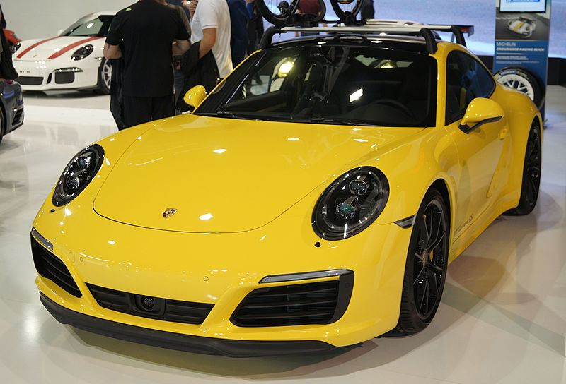

Porsche łopis
Porsche 911 (991) − szósta generacja flagowego modelu marki Porsche - 911 produkowana od 2011 roku. Pojazd po raz pierwszy zaprezentowano podczas targów motoryzacyjnych we Frankfurcie 15 września 2011 roku.Porsche 911 dostępne jest w wersjach: 911 Carrera, 911 Carrera S, 911 Carrera Cabriolet, 911 Carrera S Cabriolet, 911 Carrera 4 (napęd na 4 koła), 911 Carrera 4S, 911 Carrera 4 Cabriolet, 911 Carrera 4S Cabriolet i 911 GT3. Jako ostatnie, do gamy dołączyły wersje 911 Turbo Cabriolet i 911 Turbo S Cabriolet. Samochody te pokazano po raz pierwszy we wrześniu 2013 roku
Porsche dane techniczne
Segment G Typy nadwozia 2-drzwiowe coupé 2-drzwiowy kabriolet 2-drzwiowa targa Skrzynia biegów 7-biegowa manualna 7-biegowa półautomatyczna PDK Rodzaj napędu tylny AWD Długość 4491 mm Turbo: 4506 mm GT3: 4545 mm Szerokość 1808 mm Turbo: 1880 mm GT3: 1852 mm Wysokość 1303 mm Turbo: 1296 mm GT3: 1269 mm Rozstaw osi 2450 mm GT3: 2457 mm Masa własna 1380 - 1605 kg Poj. zbiornika paliwa 64 l Liczba miejsc 4 Pojemność bagażnika cabrio: 135 - 155 l coupe: 135 - 205 l
